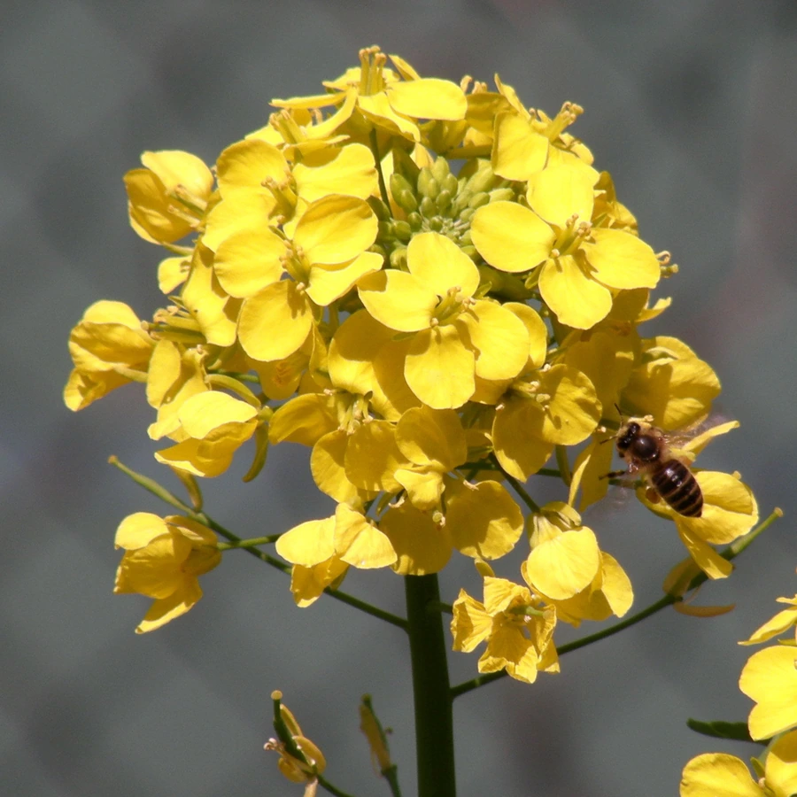

农作物与经济植物 · 植物界
大白菜 Brassica rapa

大白菜的叶球紧实多汁，是北方冬季的主要蔬菜，可炒食、炖菜、做馅和腌制酸菜，产量高、耐储运。
- 分类
- 门被子植物门纲双子叶植物纲目十字花目科十字花科属芸薹属
- 栖息环境
- 温带平原的菜地，喜凉爽、光照充足与深厚保水土壤
- 地理分布
- 原产中国，现主产于中国山东、河北、河南及东亚各国
- 保护级别
- 暂无评估（栽培作物）
物种志
大白菜是十字花科一二年生草本，株高 0.3–0.5 m。基生叶大而宽，外叶绿色或淡绿色，叶柄宽扁、白色；心叶逐渐抱合成紧实的叶球，颜色淡黄或金黄。叶片表面有皱褶和毛刺。花为总状花序，黄色，四瓣十字形，但生产上多用种子繁殖。
大白菜原产中国，栽培历史已有 1000 多年，是北方最重要的冬储蔬菜。它喜凉爽、光照充足，苗期耐热、结球期喜冷凉，适宜在土层深厚、保水力强的壤土中种植，多秋季播种、初冬收获。叶球可炒食、炖菜、做馅、涮火锅，也可腌制酸菜、辣白菜。大白菜富含维生素 C、膳食纤维和矿物质，耐储运，是冬季的当家菜。中国是世界上最大的大白菜生产国，山东、河北、河南等地是主产区。
形态与习性
- 株高0.3–0.5 m
- 外叶绿色，叶柄宽扁白色
- 叶球紧实，心叶淡黄
- 繁殖种子繁殖
- 用途炒食、炖菜、做馅、腌酸菜
- 耐储性强，是北方冬储蔬菜
趣味知识
- 大白菜的心叶抱合成紧实的叶球，外层绿叶则起保护作用。
- 大白菜是中国北方冬季的当家菜，过去家家都要囤白菜。
- 大白菜可腌制酸菜、辣白菜，是东亚腌菜的重要原料。